Analysing London's Train Network
[The question you asked, the data you used, your method, and what you found or recommended.]
I am currently studying Transport Planning, after having recently graduated from Electrical Engineering. I am curious, driven by understanding how things work, and by the challenge of designing better cities for everyone.
See my work Get in touchAfter finishing my Transport Planning masters, I would like a career in urban planning, where street design particularly fascinates me. I am always looking for ways to improve our cities and our public transport networks.
[The question you asked, the data you used, your method, and what you found or recommended.]
[Project title, the problem you tackled, your approach, and your main result.]
Northern CNC · September 2023
This role required a mix of skills, carrying out a variety of activities. It included things like manual handiwork, operating laser cutters and mechanical saws safely, admin and organisational tasks, and assembling products. This involved lots of attention to detail, problem solving and technical skills.
Callerton Academy · June 2023
Here I did a week placement as a teaching assistant at a local middle school. We had to help the kids with their work, answer their questions, carry out tasks given by the teachers and conduct ourselves in a professional environment.
Domino's Pizza · August 2021 - December 2022
In this role I was required to make the pizzas, take customers' orders, clean at the end of the night, and carry out other tasks as required by my manager. This required lots of teamwork, and working under time pressure.
National Citizenship Service · Summer 2021
I participated in a group fundraising activity over two weeks in the summer to raise money for our chosen charity, Mind. In total we raised over £1000 in the two weeks!
Local Choir · September 2019 - March 2020
I worked for a few months playing piano to accompany a local choir. This involved learning a lot of pieces in a short time, and my work culminated in a successful concert.
University of Westminster · 2026 - 2027
[Relevant modules, dissertation topic, grade if you want to include it.]
Imperial College London · 2023 - 2026
Achieved an Upper Second Class Honours. This degree developed many of my skills. There were many technical modules that required extensive use of programming and mathematical skills. I also took part in two group projects that required working well in a team, writing reports, and meeting strict deadlines.
Gosforth Academy · 2021 - 2023
A*, A*, A*, A in Maths, Further Maths, Physics and Music respectively.
ABRSM
Distinction in my ARSM diploma, along with a distinction in grade 8 Piano, Clarinet and Music Theory.
In my free time, I like to travel to different parts of London and do photography at or near each of the tube stations. I also do lots of photography when I travel around Europe. My photos consist mostly of birds (especially pigeons), architecture, and landscapes.
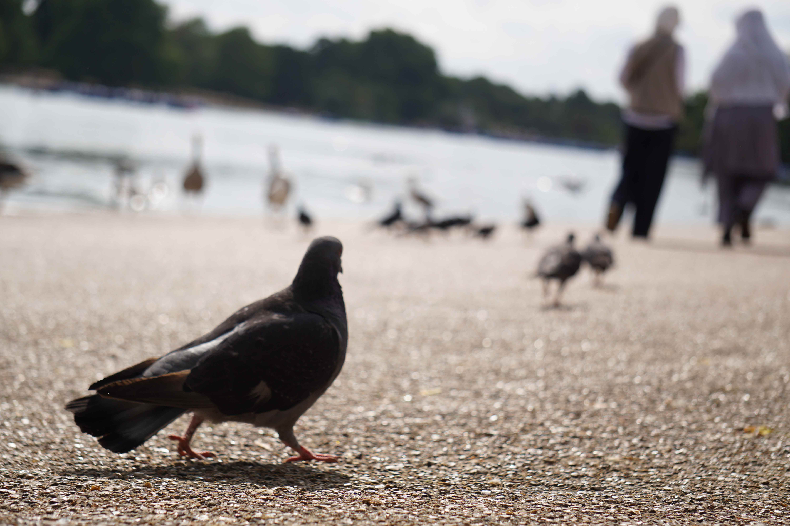
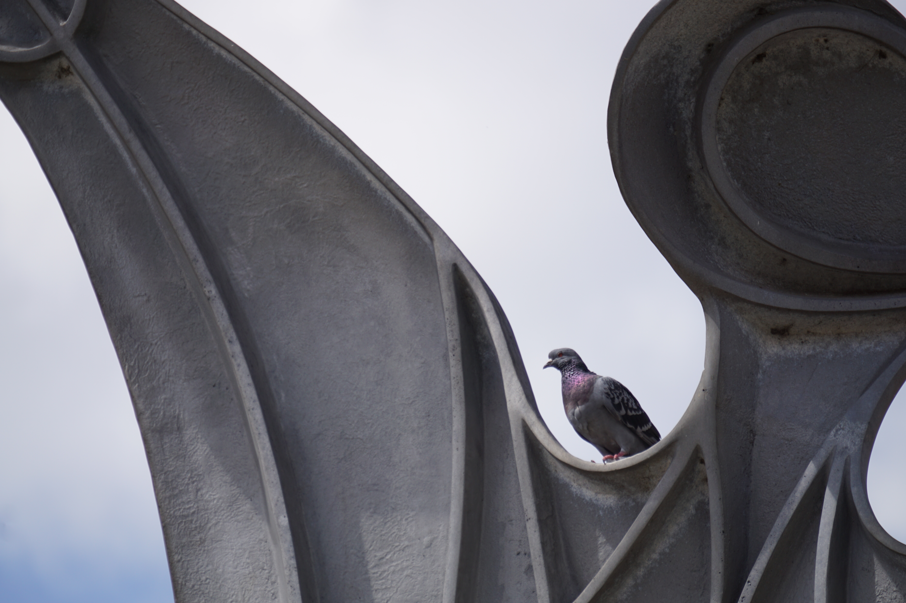
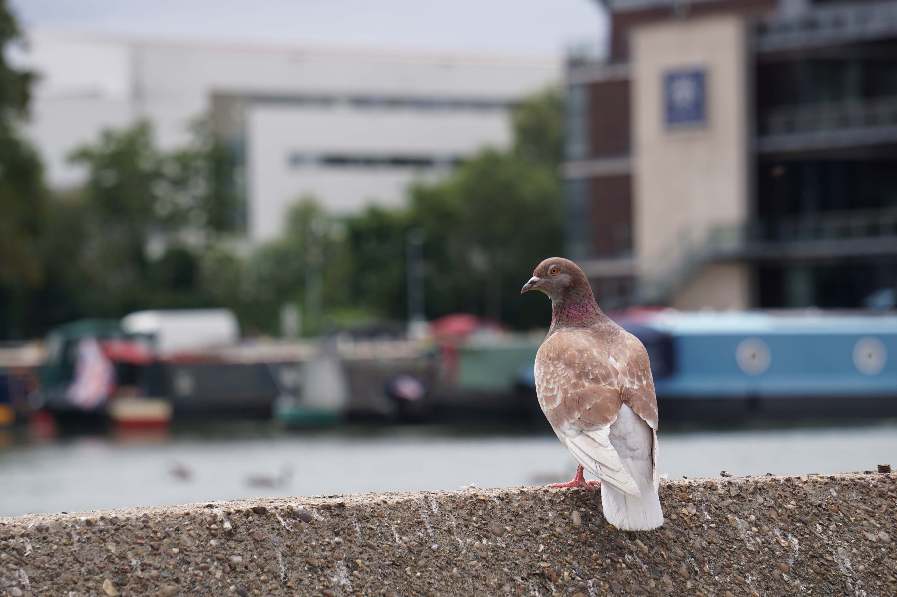
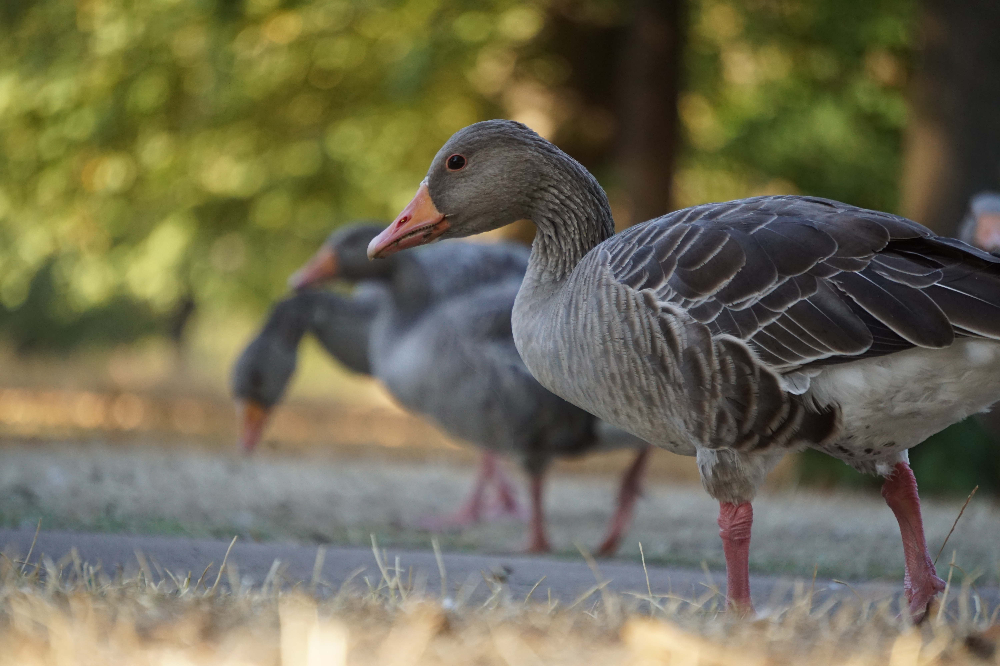
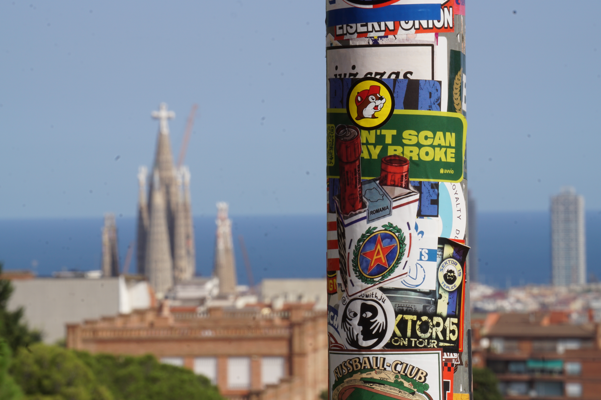
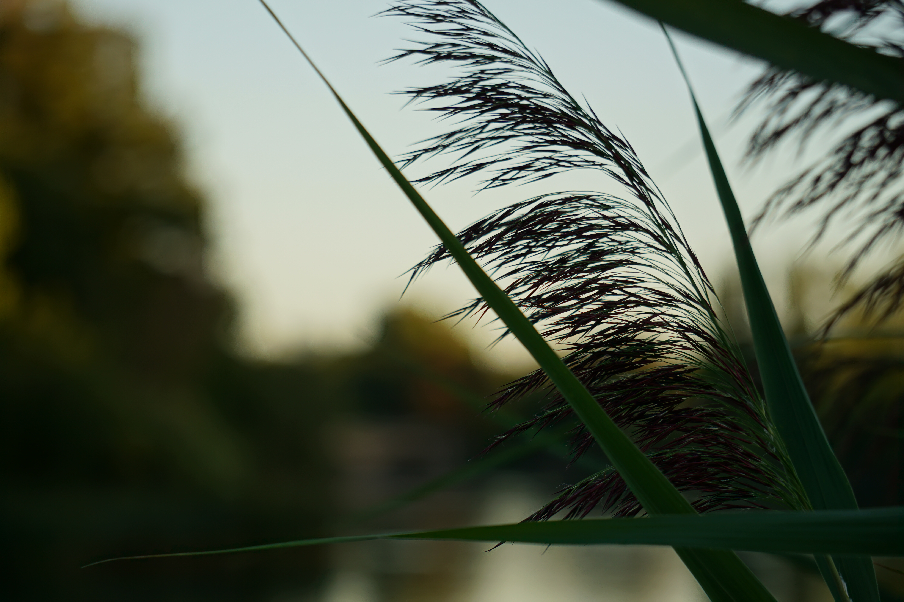
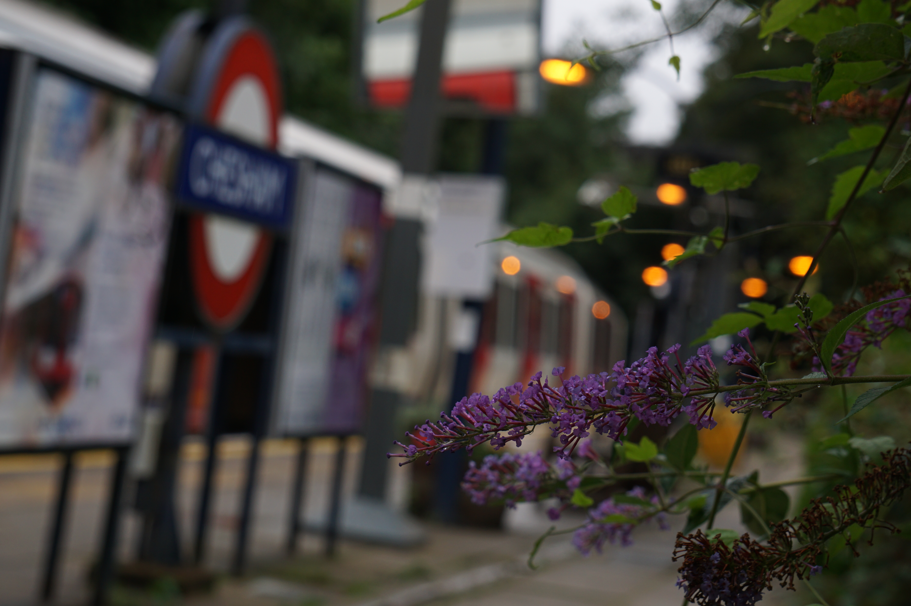
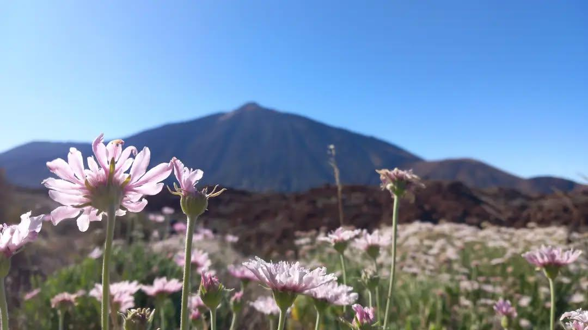
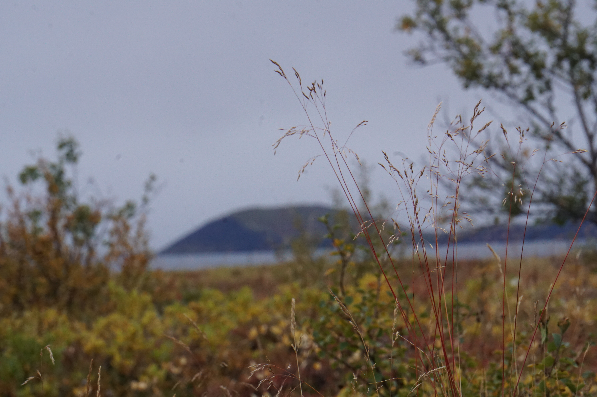
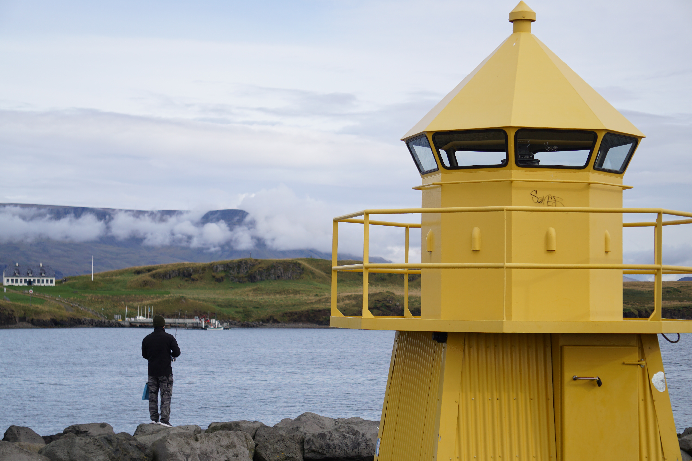
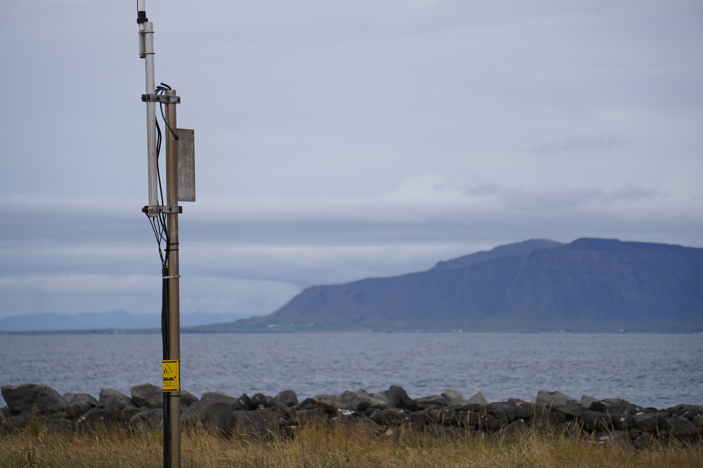
You can find more of my best work by clicking the button below.
More of my work!Open to opportunities and conversations. The best way to reach me is by email at dan1234rhodes@gmail.com.
LinkedInGitHub